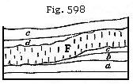
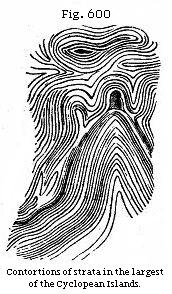

The Student’s Elements of Geology
Tests of relative Age of Volcanic Rocks. — Why ancient and modern Rocks can not be identical. — Tests by Superposition and intrusion. — Test by Alteration of Rocks in Contact. — Test by Organic Remains. — Test of Age by Mineral Character. — Test by Included Fragments. — Recent and Post-pliocene volcanic Rocks. — Vesuvius, Auvergne, Puy de Côme, and Puy de Pariou. — Newer Pliocene volcanic Rocks. — Cyclopean Isles, Etna, Dikes of Palagonia, Madeira. — Older Pliocene volcanic Rocks. — Italy. — Pliocene Volcanoes of the Eifel. — Trass.
Having in the former part of this work referred the sedimentary strata to a long succession of geological periods, we have now to consider how far the volcanic formations can be classed in a similar chronological order. The tests of relative age in this class of rocks are four: first, superposition and intrusion, with or without alteration of the rocks in contact; second, organic remains; third, mineral characters; fourth, included fragments of older rocks.
Besides these four tests it may be said, in a general way, that volcanic rocks of Primary or Palæozoic antiquity differ from those of the Secondary or Mesozoic age, and these again from the Tertiary and Recent. Not, perhaps, that they differed originally in a greater degree than the modern volcanic rocks of one region, such as that of the Andes, differ from those of another, such as Iceland, but because all rocks permeated by water, especially if its temperature be high, are liable to undergo a slow transmutation, even when they do not assume a new crystalline form like that of the hypogene rocks.
Although subaërial and submarine denudation, as before stated, remove, in the course of ages, large portions of the upper or more superficial products of volcanoes, yet these are sometimes preserved by subsidence, becoming covered by the sea or by superimposed marine deposits. In this way they may be protected for ages from the waves of the sea, or the destroying action of rivers, while, at the same time, they may not sink so deep as to be exposed to that Plutonic action (to be spoken of in Chapter XXXI) which would convert them into crystalline rocks. But even in this case they will not remain unaltered, because they will be percolated by water often of high temperature, and charged with
carbonate of lime, silex, iron, and other mineral ingredients, whereby gradual changes in the constitution of the rocks may be superinduced. Every geologist is aware how often silicified trees occur in volcanic tuffs, the perfect preservation of their internal structure showing that they have not decayed before the petrifying material was supplied.
The porous and vesicular nature of a large part, both of the basaltic and trachytic lavas, affords cavities in which silex and carbonate of lime are readily deposited. Minerals of the zeolite family, the composition of which has already been alluded to, p. 500, occur in amygdaloids and other trap-rocks in great abundance, and Daubrée’s observations have proved that they are not always simple deposits of substances held in solution by the percolating waters, being occasionally products of the chemical action of that water on the rock through which they are filtered, and portions of which are decomposed. From these considerations it follows that the perfect identity of very ancient and very modern volcanic formations is scarcely possible.
Tests by Superposition.—If a volcanic rock rest upon an aqueous deposit, the volcanic must be the newest of the two; but the like rule does not hold good where the aqueous formation rests upon the volcanic, for melted matter, rising from below, may penetrate a sedimentary mass without reaching the surface, or may be forced in conformably between two strata, as b below D in Fig. 597, after which it may cool down and consolidate. Superposition, therefore, is not of the same value as a test of age in the unstratified volcanic rocks as in fossiliferous formations. We can only rely implicitly on this test where the volcanic rocks are contemporaneous, not where they are intrusive. Now, they are said to be contemporaneous if produced by volcanic action which was going on simultaneously with the deposition of the strata with which they are associated. Thus in the section at D (Fig. 597), we may perhaps ascertain that the trap b flowed over the fossiliferous bed c, and that, after its consolidation, a was deposited upon it, a and c both belonging to the same geological period. But, on the other hand, we must conclude the trap to be intrusive, if the stratum a be altered by b at the point of contact,
or if, in pursuing b for some distance, we find at length that it cuts through the stratum a, and then overlies it as at E.
We may, however, be easily deceived in supposing the volcanic rock to be intrusive, when in reality it is contemporaneous; for a sheet of lava, as it spreads over the bottom of the sea, can not rest everywhere upon the same stratum, either because these have been denuded, or because, if newly thrown down, they thin out in certain places, thus allowing the lava to cross their edges. Besides, the heavy igneous fluid will often, as it moves along, cut a channel into beds of soft mud and sand. Suppose the submarine lava F (Fig. 598) to have come in contact in this manner with the strata a, b, c, and that after its consolidation the strata d, e are thrown down in a nearly horizontal position, yet so as to lie unconformably to F, the appearance of subsequent intrusion will here be complete, although the trap is in fact contemporaneous. We must not, therefore, hastily infer that the rock F is intrusive, unless we find the overlying strata, d, e, to have been altered at their junction, as if by heat.
The test of age by superposition is strictly applicable to all stratified volcanic tuffs, according to the rules already explained in the case of sedimentary deposits (see p. 124).
Test of Age by Organic Remains.—We have seen how, in the vicinity of active volcanoes, scoriæ, pumice, fine sand, and fragments of rock are thrown up into the air, and then showered down upon the land, or into neighbouring lakes or seas. In the tuffs so formed shells, corals, or any other durable organic bodies which may happen to be strewed over the bottom of a lake or sea will be imbedded, and thus continue as permanent memorials of the geological period when the volcanic eruption occurred. Tufaceous strata thus formed in the neighbourhood of Vesuvius, Etna, Stromboli, and other volcanoes now in islands or near the sea, may give information of the relative age of these tuffs at some remote future period when the fires of these mountains are extinguished. By evidence of this kind we can establish a coincidence in age between volcanic rocks and the different primary, secondary, and tertiary fossiliferous strata.
The tuffs alluded to may not always be marine, but may include, in some places, fresh-water shells; in others, the bones of terrestrial quadrupeds. The diversity of organic remains in formations of this nature is perfectly intelligible,
if we reflect on the wide dispersion of ejected matter during late eruptions, such as that of the volcano of Coseguina, in the province of Nicaragua, January 19, 1835. Hot cinders and fine scoriæ were then cast up to a vast height, and covered the ground as they fell to the depth of more than ten feet, for a distance of eight leagues from the crater, in a southerly direction. Birds, cattle, and wild animals were scorched to death in great numbers, and buried in ashes. Some volcanic dust fell at Chiapa, upward of 1200 miles, not to leeward of the volcano, as might have been anticipated, but to windward, a striking proof of a counter-current in the upper region of the atmosphere; and some on Jamaica, about 700 miles distant to the north-east. In the sea, also, at the distance of 1100 miles from the point of eruption, Captain Eden of the “Conway” sailed 40 miles through floating pumice, among which were some pieces of considerable size.*
Test of Age by Mineral Composition.—As sediment of homogeneous composition, when discharged from the mouth of a large river, is often deposited simultaneously over a wide space, so a particular kind of lava flowing from a crater during one eruption may spread over an extensive area; thus in Iceland, in 1783, the melted matter, pouring from Skaptar Jokul, flowed in streams in opposite directions, and caused a continuous mass the extreme points of which were 90 miles distant from each other. This enormous current of lava varied in thickness from 100 feet to 600 feet, and in breadth from that of a narrow river gorge to 15 miles.† Now, if such a mass should afterwards be divided into separate fragments by denudation, we might still, perhaps, identify the detached portions by their similarity in mineral composition. Nevertheless, this test will not always avail the geologist; for, although there is usually a prevailing character in lava emitted during the same eruption, and even in the successive currents flowing from the same volcano, still, in many cases, the different parts even of one lava-stream, or, as before stated, of one continuous mass of trap, vary much in mineral composition and texture.
In Auvergne, the Eifel, and other countries where trachyte and basalt are both present, the trachytic rocks are for the most part older than the basaltic. These rocks do, indeed, sometimes alternate partially, as in the volcano of Mont Dor, in Auvergne; and in Madeira trachytic rocks overlie an older basaltic series; but the trachyte occupies more generally an inferior position, and is cut through and overflowed by
* Caldcleugh, Phil. Trans., 1836, p. 27.
† See Principles, Index, “Skaptar
Jokul.”
basalt. It can by no means be inferred that trachyte predominated at one period of the earth’s history and basalt at another, for we know that trachytic lavas have been formed at many successive periods, and are still emitted from many active craters; but it seems that in each region, where a long series of eruptions have occurred, the lavas containing feldspar more rich in silica have been first emitted, and the escape of the more augitic kinds has followed. The hypothesis suggested by Mr. Scrope may, perhaps, afford a solution of this problem. The minerals, he observes, which abound in basalt are of greater specific gravity than those composing the feldspathic lavas; thus, for example, hornblende, augite, and olivine are each more than three times the weight of water; whereas common feldspar and albite have each scarcely more than 2½ times the specific gravity of water; and the difference is increased in consequence of there being much more iron in a metallic state in basalt and greenstone than in trachyte and other allied feldspathic lavas. If, therefore, a large quantity of rock be melted up in the bowels of the earth by volcanic heat, the denser ingredients of the boiling fluid may sink to the bottom, and the lighter remaining above would in that case be first propelled upward to the surface by the expansive power of gases. Those materials, therefore, which occupy the lowest place in the subterranean reservoir will always be emitted last, and take the uppermost place on the exterior of the earth’s crust.
Test by Included Fragments.—We may sometimes discover the relative age of two trap-rocks, or of an aqueous deposit and the trap on which it rests, by finding fragments of one included in the other in cases such as those before alluded to, where the evidence of superposition alone would be insufficient. It is also not uncommon to find a conglomerate almost exclusively composed of rolled pebbles of trap, associated with some fossiliferous stratified formation in the neighbourhood of massive trap. If the pebbles agree generally in mineral character with the latter, we are then enabled to determine its relative age by knowing that of the fossiliferous strata associated with the conglomerate. The origin of such conglomerates is explained by observing the shingle beaches composed of trap-pebbles in modern volcanoes, as at the base of Etna.
Recent and Post-pliocene Volcanic Rocks.—I shall now select examples of contemporaneous volcanic rocks of successive geological periods, to show that igneous causes have been in activity in all past ages of the world. They have been perpetually shifting the places where they have broken out
at the earth’s surface, and we can sometimes prove that those areas which are now the great theatres of volcanic action were in a state of perfect tranquillity at remote geological epochs, and that, on the other hand, in places where at former periods the most violent eruptions took place at the surface and continued for a great length of time, there has been an entire suspension of igneous action in historical times, and even, as in the British Isles, throughout a large part of the antecedent Tertiary Period.
In the absence of British examples of volcanic rocks newer than the Upper Miocene, I may state that in other parts of the world, especially in those where volcanic eruptions are now taking place from time to time, there are tuffs and lavas belonging to that part of the Tertiary era the antiquity of which is proved by the presence of the bones of extinct quadrupeds which co-existed with terrestrial, fresh-water, and marine mollusca of species still living. One portion of the lavas, tuffs, and trap-dikes of Etna, Vesuvius, and the island of Ischia has been produced within the historical era; another and a far more considerable part originated at times immediately antecedent, when the waters of the Mediterranean were already inhabited by the existing testacea, but when certain species of elephant, rhinoceros, and other quadrupeds now extinct, inhabited Europe.
Vesuvius.—I have traced in the “Principles of Geology” the history of the changes which the volcanic region of Campania is known to have undergone during the last 2000 years. The aggregate effect of igneous operations during that period is far from insignificant, comprising as it does the formation of the modern cone of Vesuvius since the year 79, and the production of several minor cones in Ischia, together with that of Monte Nuovo in the year 1538. Lava-currents have also flowed upon the land and along the bottom of the sea—volcanic sand, pumice, and scoriæ have been showered down so abundantly that whole cities were buried—tracts of the sea have been filled up or converted into shoals—and tufaceous sediment has been transported by rivers and land-floods to the sea. There are also proofs, during the same recent period, of a permanent alteration of the relative levels of the land and sea in several places, and of the same tract having, near Puzzuoli, been alternately upheaved and depressed to the amount of more than twenty feet. In connection with these convulsions, there are found, on the shores of the Bay of Baiæ, recent tufaceous strata, filled with articles fabricated by the hands of man, and mingled with marine shells.
It has also been stated (p. 206), that when we examine this same region, it is found to consist largely of tufaceous strata, of a date anterior to human history or tradition, which are of such thickness as to constitute hills from 500 to more than 2000 feet in height. Some of these strata contain marine shells which are exclusively of living species, others contain a slight mixture, one or two per cent of species not known as living.
The ancient part of Vesuvius is called Somma, and consists of the remains of an older cone which appears to have been partly destroyed by explosion. In the great escarpment which this remnant of the ancient mountain presents towards the modern cone of Vesuvius, there are many dikes which are for the most part vertical, and traverse the inclined beds of lava and scoriæ which were successively superimposed during those eruptions by which the old cone was formed. They project in relief several inches, or sometimes feet, from the face of the cliff, being extremely compact, and less destructible than the intersected tuffs and porous lavas. In vertical extent they vary from a few yards to 500 feet, and in breadth from one to twelve feet. Many of them cut all the inclined beds in the escarpment of Somma from top to bottom, others stop short before they ascend above halfway. In mineral composition they scarcely differ from the lavas of Somma, the rock consisting of a base of leucite and augite, through which large crystals of augite and some of leucite are scattered.
Nothing is more remarkable than the usual parallelism of the opposite sides of the dikes, which correspond almost as regularly as the two opposite faces of a wall of masonry. This character appears at first the more inexplicable, when we consider how jagged and uneven are the rents caused by earthquakes in masses of heterogeneous composition, like those composing the cone of Somma. In explanation of this phenomenon, M. Necker refers us to Sir W. Hamilton’s account of an eruption of Vesuvius in the year 1779, who records the following fact: “The lavas, when they either boiled over the crater, or broke out from the conical parts of the volcano, constantly formed channels as regular as if they had been cut by art down the steep part of the mountain; and whilst in a state of perfect fusion, continued their course in those channels, which were sometimes full to the brim, and at other times more or less so, according to the quantity of matter in motion.
”These channels (says the same observer), I have found, upon examination after an eruption, to be in general from
two to five or six feet wide, and seven or eight feet deep. They were often hid from the sight by a quantity of scoriæ that had formed a crust over them; and the lava, having been conveyed in a covered way for some yards, came out fresh again into an open channel. After an eruption, I have walked in some of those subterraneous or covered galleries, which were exceedingly curious, the sides, top, and bottom being worn perfectly smooth and even in most parts by the violence of the currents of the red-hot lavas which they had conveyed for many weeks successively.” I was able to verify this phenomenon in 1858, when a stream of lava issued from a lateral cone.* Now, the walls of a vertical fissure, through which lava has ascended in its way to a volcanic vent, must have been exposed to the same erosion as the sides of the channels before adverted to. The prolonged and uniform friction of the heavy fluid, as it is forced and made to flow upward, can not fail to wear and smooth down the surfaces on which it rubs, and the intense heat must melt all such masses as project and obstruct the passage of the incandescent fluid.
The rock composing the dikes both in the modern and ancient part of Vesuvius is far more compact than that of ordinary lava, for the pressure of a column of melted matter in a fissure greatly exceeds that in an ordinary stream of lava; and pressure checks the expansion of those gases which give rise to vesicles in lava. There is a tendency in almost all the Vesuvian dikes to divide into horizontal prisms, a phenomenon in accordance with the formation of vertical columns in horizontal beds of lava; for in both cases the divisions which give rise to the prismatic structure are at right angles to the cooling surfaces. (See p. 510.)
Auvergne.—Although the latest eruptions in central France seem to have long preceded the historical era, they are so modern as to have a very intimate connection with the present superficial outline of the country and with the existing valleys and river-courses. Among a great number of cones with perfect craters, one called the Puy de Tartaret sent forth a lava-current which can be traced up to its crater, and which flowed for a distance of thirteen miles along the bottom of the present valley to the village of Nechers, covering the alluvium of the old valley in which were preserved the bones of an extinct species of horse, and of a lagomys and other quadrupeds all closely allied to recent animals, while the associated land-shells were of species now living, such as Cyclostoma elegans, Helix hortensis, H. nemoralis,
* Principles of Geology, vol. i, p. 626.
H. lapicida, and Clausilia rugosa. That the current which has issued from the Puy de Tartaret may, nevertheless, be very ancient in reference to the events of human history, we may conclude, not only from the divergence of the mammiferous fauna from that of our day, but from the fact that a Roman bridge of such form and construction as continued in use only down to the fifth century, but which may be older, is now seen at a place about a mile and a half from St. Nectaire. This ancient bridge spans the river Couze with two arches, each about fourteen feet wide. These arches spring from the lava of Tartaret, on both banks, showing that a ravine precisely like that now existing had already been excavated by the river through that lava thirteen or fourteen centuries ago.
While the river Couze has in most cases, as at the site of this ancient bridge, been simply able to cut a deep channel through the lava, the lower portion of which is shown to be columnar, the same torrent has in other places, where the valley was contracted to a narrow gorge, had power to remove the entire mass of basaltic rock, causing for a short space a complete breach of continuity in the volcanic current. The work of erosion has been very slow, as the basalt is tough and hard, and one column after another must have been undermined and reduced to pebbles, and then to sand. During the time required for this operation, the perishable cone of Tartaret, occupying the lowest part of the great valley descending from Mont Dor (see p. 542), and damming up the river so as to cause the Lake of Chambon, has stood uninjured, proving that no great flood or deluge can have passed over this region in the interval between the eruption of Tartaret and our own times.
Puy de Côme.—The Puy de Côme and its lava-current, near Clermont, may be mentioned as another minor volcano of about the same age. This conical hill rises from the granitic platform, at an angle of between 30° and 40°, to the height of more than 900 feet. Its summit presents two distinct craters, one of them with a vertical depth of 250 feet. A stream of lava takes its rise at the western base of the hill instead of issuing from either crater, and descends the granitic slope towards the present site of the town of Pont Gibaud. Thence it pours in a broad sheet down a steep declivity into the valley of the Sioule, filling the ancient river-channel for the distance of more than a mile. The Sioule, thus dispossessed of its bed, has worked out a fresh one between the lava and the granite of its western bank; and the excavation
has disclosed, in one spot, a wall of columnar basalt about fifty feet high.*
The excavation of the ravine is still in progress, every winter some columns of basalt being undermined and carried down the channel of the river, and in the course of a few miles rolled to sand and pebbles. Meanwhile the cone of Côme remains unimpaired, its loose materials being protected by a dense vegetation, and the hill standing on a ridge not commanded by any higher ground, so that no floods of rain-water can descend upon it. There is no end to the waste which the hard basalt may undergo in future, if the physical geography of the country continue unchanged—no limit to the number of years during which the heap of incoherent and transportable materials called the Puy de Côme may remain in an almost stationary condition.
Puy de Pariou.—The brim of the crater of the Puy de Pariou, near Clermont, is so sharp, and has been so little blunted by time, that it scarcely affords room to stand upon. This and other cones in an equally remarkable state of integrity have stood, I conceive, uninjured, not in spite of their loose porous nature, as might at first be naturally supposed, but in consequence of it. No rills can collect where all the rain is instantly absorbed by the sand and scoriæ, as is remarkably the case on Etna; and nothing but a water-spout breaking directly upon the Puy de Pariou could carry away a portion of the hill, so long as it is not rent or ingulfed by earthquakes.
Newer Pliocene Volcanic Rocks.—The more ancient portion of Vesuvius and Etna originated at the close of the Newer Pliocene period, when less than ten, sometimes only one, in a hundred of the shells differed from those now living. In the case of Etna, it was before stated (p. 205) that Post-pliocene formations occur in the neighbourhood of Catania, while the oldest lavas of the great volcano are Pliocene. These last are seen associated with sedimentary deposits at Trezza and other places on the southern and eastern flanks of the great cone (see p. 205).
Cyclopean Islands.—The Cyclopean Islands, called by the Sicilians Dei Faraglioni, in the sea-cliffs of which these beds of clay, tuff, and associated lava are laid open to view, are situated in the Bay of Trezza, and may be regarded as the extremity of a promontory severed from the main land. Here numerous proofs are seen of submarine eruptions, by which the argillaceous and sandy strata were invaded and cut through, and tufaceous breccias formed. Inclosed in
* Scrope’s Central France, p. 60, and plate.
these breccias are many angular and hardened fragments of laminated clay in different states of alteration by heat, and intermixed with volcanic sands.
The loftiest of the Cyclopean islets, or rather rocks, is about 200 feet in height, the summit being formed of a mass of stratified clay, the laminæ of which are occasionally subdivided by thin arenaceous layers. These strata dip to the N.W., and rest on a mass of columnar lava (see Fig. 599) in which the tops of the pillars are weathered, and so rounded as to be often hemispherical.
In some places in the adjoining and largest islet of the group, which lies to the north-eastward of that represented in Figure 599), the overlying clay has been greatly altered and hardened by the igneous rock, and occasionally contorted in the most extraordinary manner; yet the lamination has not been obliterated, but, on the contrary, rendered much more conspicuous, by the indurating process.
In Fig. 600 I have represented a portion of the altered rock, a few feet square, where the alternating thin laminæ of sand and clay are contorted in a manner often observed in ancient metamorphic schists. A great fissure, running
from east to west, nearly divides this larger island into two parts, and lays open its internal structure. In the section thus exhibited, a dike of lava is seen, first cutting through an older mass of lava, and then penetrating the superincumbent tertiary strata. In one place the lava ramifies and terminates in thin veins, from a few feet to a few inches in thickness (see Fig. 601). The arenaceous laminæ are much hardened at the point of contact, and the clays are converted into siliceous schist. In this island the altered rocks assume a honey-comb structure on their weathered surface, singularly contrasted with the smooth and even outline which the same beds present in their usual soft and yielding state. The pores of the lava are sometimes coated, or entirely filled with carbonate of lime, and with a zeolite resembling analcime, which has been called cyclopite. The latter mineral has also been found in small fissures traversing the altered marl, showing that the same cause which introduced the minerals into the cavities of the lava, whether we suppose sublimation or aqueous infiltration, conveyed it also into the open rents of the contiguous sedimentary strata.
Dikes of Palagonia.—Dikes of vesicular and amygdaloidal lava are also seen traversing marine tuff or peperino, west of Palagonia, some of the pores of the lava being empty, while others are filled with carbonate of lime. In such cases we may suppose the tuff to have resulted from showers of volcanic sand and scoriæ, together with fragments of limestone, thrown out by a submarine explosion, similar to that which gave rise to Graham Island in 1831. When the mass was, to a certain degree, consolidated, it may have been rent open, so that the lava ascended through fissures, the walls of which were perfectly even and parallel. In one case, after the melted matter that filled the rent (Fig. 602) had cooled down, it must have been fractured and shifted horizontally by a lateral movement.
In Fig. 603, the lava has more the appearance of a vein, which forced its way through the peperino. It is highly probable that similar appearances would be seen, if we could examine the floor of the sea in that part
of the Mediterranean where the waves have recently washed away the new volcanic island; for when a superincumbent mass of ejected fragments has been removed by denudation, we may expect to see sections of dikes traversing tuff, or, in other words, sections of the channels of communication by which the subterranean lavas reached the surface.
Madeira.—Although the more ancient portion of the volcanic eruptions by which the island of Madeira and the neighbouring one of Porto Santo were built up occurred, as we shall presently see, in the Upper Miocene Period, a still larger part of the island is of Pliocene date. That the latest outbreaks belonged to the Newer Pliocene Period, I infer from the close affinity to the present flora of Madeira of the fossil plants preserved in a leaf-bed in the north-eastern part of the island. These fossils, associated with some lignite in the ravine of the river San Jorge, can none of them be proved to be of extinct species, but their antiquity may be inferred from the following considerations: Firstly—The leaf-bed, discovered by Mr. Hartung and myself in 1853, at the height of 1000 feet above the level of the sea, crops out at the base of a cliff formed by the erosion of a gorge cut through alternating layers of basalt and scoriæ, the product of a vast succession of eruptions of unknown date, piled up to a thickness of 1000 feet, and which were all poured out after the plants, of which about twenty species have been recognised, flourished in Madeira. These lavas are inclined at an angle of about 15° to the north, and came down from the great central region of eruption. Their accumulation implies a long period of intermittent volcanic action, subsequently to which the ravine of San Jorge was hollowed out. Secondly—Some few of the plants, though perhaps all of living species, are supposed to be of genera not now existing in the island. They have been described by Sir Charles Bunbury and Professor Heer, and the former first pointed out that many of the leaves are of the laurel type, and analogous to those now flourishing in the modern forests of Madeira. He also recognised among them the leaves of Woodwardia radicans,
and Davallia Canariensis, ferns now abundant in Madeira. Thirdly—the great age of this leaf-bed of San Jorge, which was perhaps originally formed in the crater of some ancient volcanic cone afterwards buried under lava, is proved by its belonging to a part of the eastern extremity of Madeira, which, after the close of the igneous eruptions, became covered in the adjoining district of Caniçal with blown sand in which a vast number of land-shells were buried. These fossil shells belonged to no less than 36 species, among which are many now extremely rare in the island, and others, about five per cent, extinct or unknown in any part of the world. Several of these of the genus Helix are conspicuous from the peculiarity of their forms, others from their large dimensions. The geographical configuration of the country shows that this shell-bed is considerably more modern than the leaf-bed; it must therefore be referred to the Newer Pliocene, according to the definition of this period given in a former chapter (p. 143).
Older Pliocene Period.—Italy.—In Tuscany, as at Radicofani, Viterbo, and Aquapendente, and in the Campagna di Roma, submarine volcanic tuffs are interstratified with the Older Pliocene strata of the Sub-apennine hills in such a manner as to leave no doubt that they were the products of eruptions which occurred when the shelly marls and sands of the Sub-appenine hills were in the course of deposition. This opinion I expressed* after my visit to Italy in 1828 and it has recently (1850) been confirmed by the argument adduced by Sir R. Murchison in favour of the submarine origin of the tertiary volcanic rocks of Italy.† These rocks are well-known to rest conformably on the Sub-apennine marls, even as far south as Monte Mario, in the suburbs of Rome. On the exact age of the deposits of Monte Mario new light has recently been thrown by a careful study of their marine fossil shells, undertaken by MM. Rayneval, Van den Hecke, and Ponzi. They have compared no less than 160 species with the shells of the Coralline Crag of Suffolk, so well described by Mr. Searles Wood; and the specific agreement between the British and Italian fossils is so great, if we make due allowance for geographical distance and the difference of latitude, that we can have little hesitation in referring both to the same period, or to the Older Pliocene of this work. It is highly probable that, between the oldest trachytes of Tuscany and the newest rocks in the neighbourhood of Naples, a
* See 1st edit. of Principles of Geology, vol.
iii, chaps. xiii and xiv, 1833; and former editions of this work,
chap. xxxi.
† Quart. Geol. Journ., vol. vi, p. 281.
series of volcanic products might be detected of every age from the Older Pliocene to the historical epoch.
Pliocene Volcanoes of the Eifel.—Some of the most perfect cones and craters in Europe, not even excepting those of the district round Vesuvius, may be seen on the left or west bank of the Rhine, near Bonn and Andernach. They exhibit characters distinct from any which I have observed elsewhere, owing to the large part which the escape of aqueous vapour has played in the eruptions and the small quantities of lava emitted. The fundamental rocks of the district are grey and red sandstones and shales, with some associated limestones, replete with fossils of the Devonian or Old Red Sandstone group. The volcanoes broke out in the midst of these inclined strata, and when the present systems of hills and valleys had already been formed. The eruptions occurred sometimes at the bottom of deep valleys, sometimes on the summit of hills, and frequently on intervening platforms. In travelling through this district we often come upon them most unexpectedly, and may find ourselves on the very edge of a crater before we had been led to suspect that we were approaching the site of any igneous outburst. Thus, for example, on arriving at the village of Gemund, immediately south of Daun, we leave the stream, which flows at the bottom of a deep valley in which strata of sandstone and shale crop out. We then climb a steep hill, on the surface of which we see the edges of the same strata dipping inward towards the mountain. When we have ascended to a considerable height, we see fragments of scoriæ sparingly scattered over the surface; until at length, on reaching the summit, we find ourselves suddenly on the edge of a tarn, or deep circular lake-basin called the Gemunder Maar. In it we recognise the ordinary form of a crater, for which we have been prepared by the occurrence of scoriæ scattered over the surface of the soil. But on examining the walls of the crater we find precipices of sandstone and shale which exhibit no signs of the action of heat; and we look in vain for those beds of lava and scoriæ, dipping outward on every side, which we have been accustomed to consider as characteristic of volcanic vents. As we proceed, however, to the opposite side of the lake, we find a considerable quantity of scoriæ and some lava, and see the whole surface of the soil sparkling with volcanic sand, and strewed with ejected fragments of half-fused shale, which preserves its laminated texture in the interior, while it has a vitrified or scoriform coating.
Other crater lakes of circular or oval form, and hollowed out of similar ancient strata, occur in the Upper Eifel, where
copious aëriform discharges have taken place, throwing out vast heaps of pulverized shale into the air. I know of no other extinct volcanoes where gaseous explosions of such magnitude have been attended by the emission of so small a quantity of lava. Yet I looked in vain in the Eifel for any appearances which could lend support to the hypothesis that the sudden rushing out of such enormous volumes of gas had ever lifted up the stratified rocks immediately around the vent so as to form conical masses, having their strata dipping outward on all sides from a central axis, as is assumed in the theory of elevation craters, alluded to in the last chapter.
I have already given (Fig. 590) an example in the Eifel of a small stream of lava which issued from one of the craters of that district at Bertrich-Baden. It shows that when some of these volcanoes were in action the valleys had already been eroded to their present depth.
Trass.—The tufaceous alluvium called trass, which has covered large areas in the Eifel, and choked up some valleys now partially re-excavated, is unstratified. Its base consists almost entirely of pumice, in which are included fragments of basalt and other lavas, pieces of burnt shale, slate, and sandstone, and numerous trunks and branches of trees. If, as is probable, this trass was formed during the period of volcanic eruptions, it may have originated in the manner of the moya of the Andes.
We may easily conceive that a similar mass might now be produced, if a copious evolution of gases should occur in one of the lake-basins. If a breach should be made in the side of the cone, the flood would sweep away great heaps of ejected fragments of shale and sandstone, which would be borne down into the adjoining valleys. Forests might be torn up by such a flood, and thus the occurrence of the numerous trunks of trees dispersed irregularly through the trass can be explained. The manner in which this trass conforms to the shape of the present valleys implies its comparatively modern origin, probably not dating farther back than the Pliocene Period.
{kind=link}